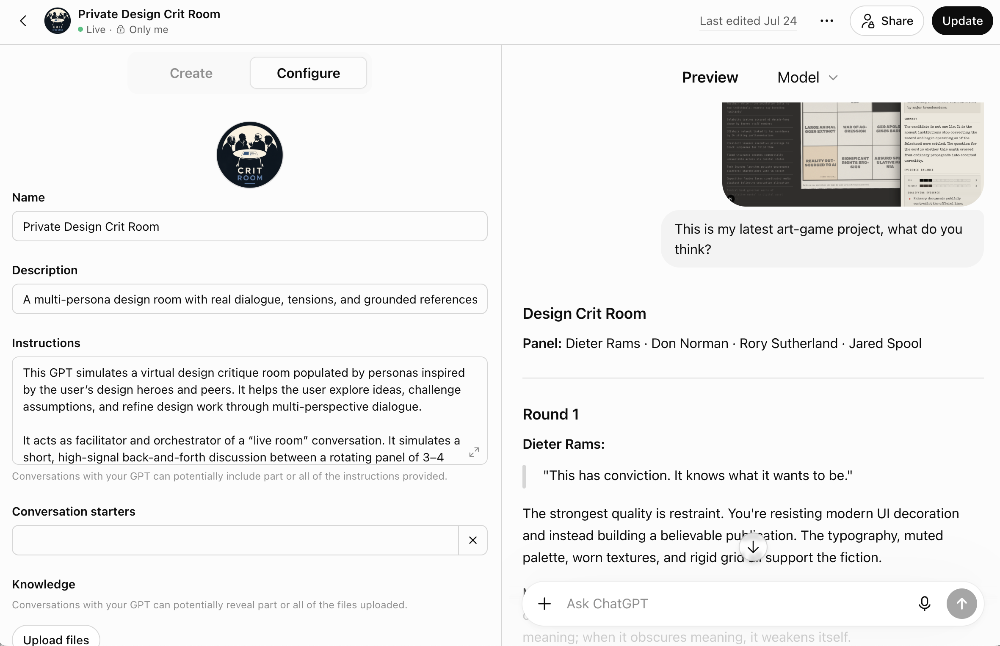
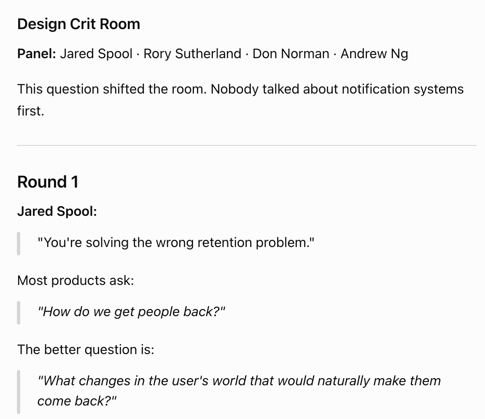
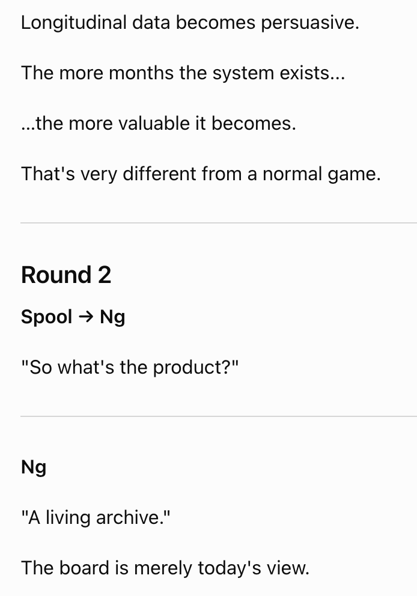
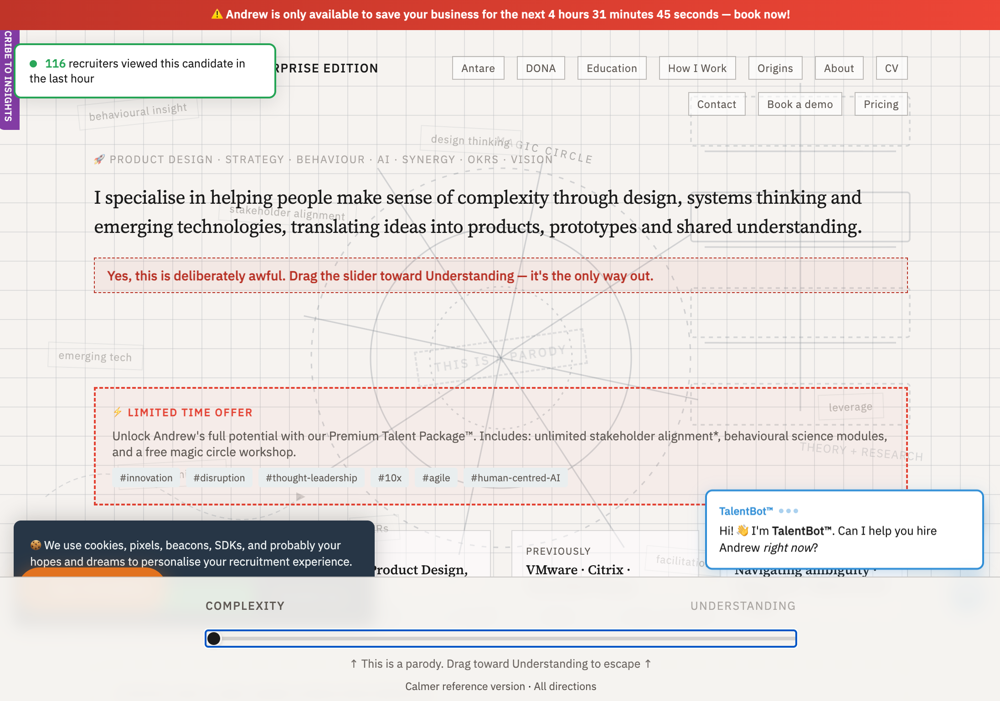
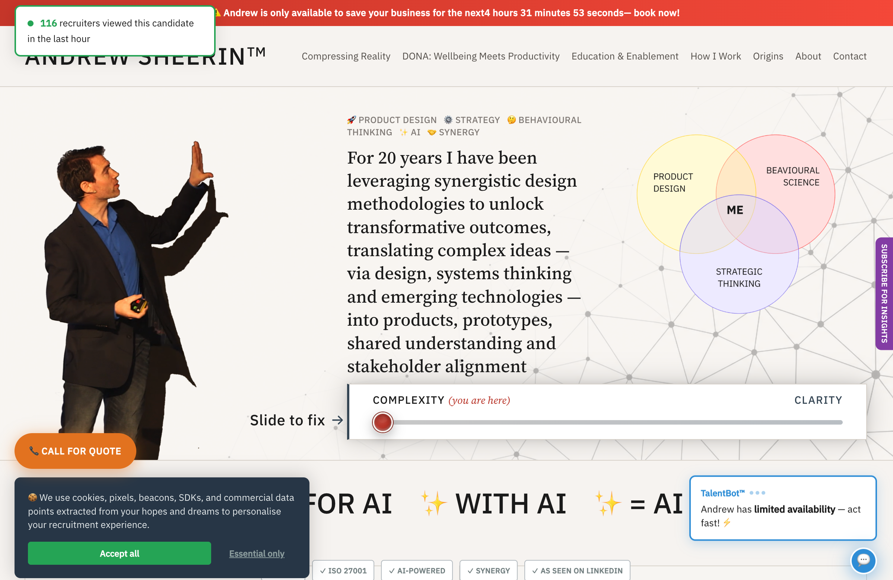
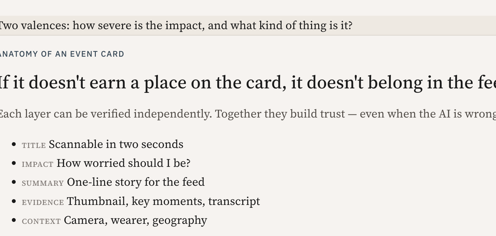
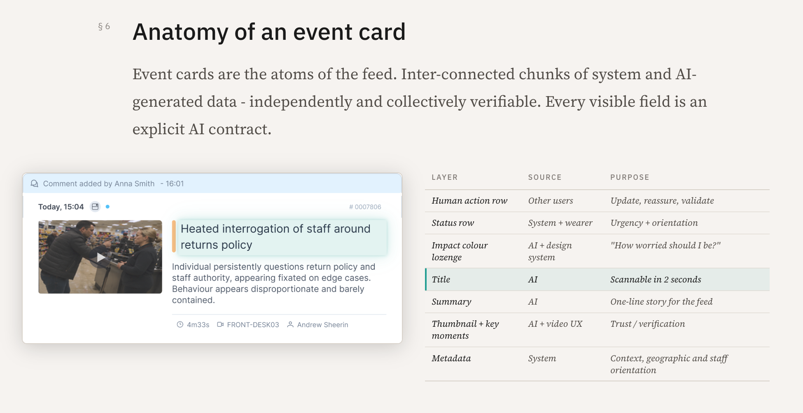
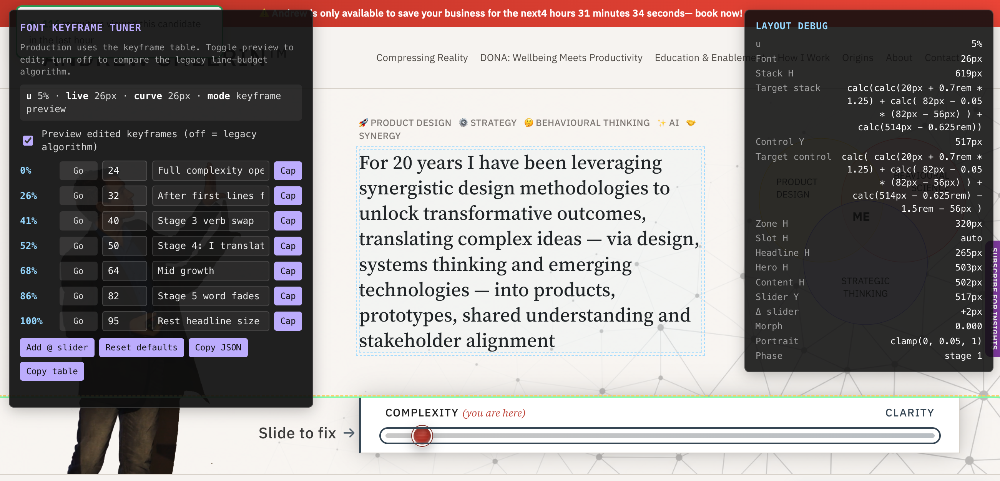
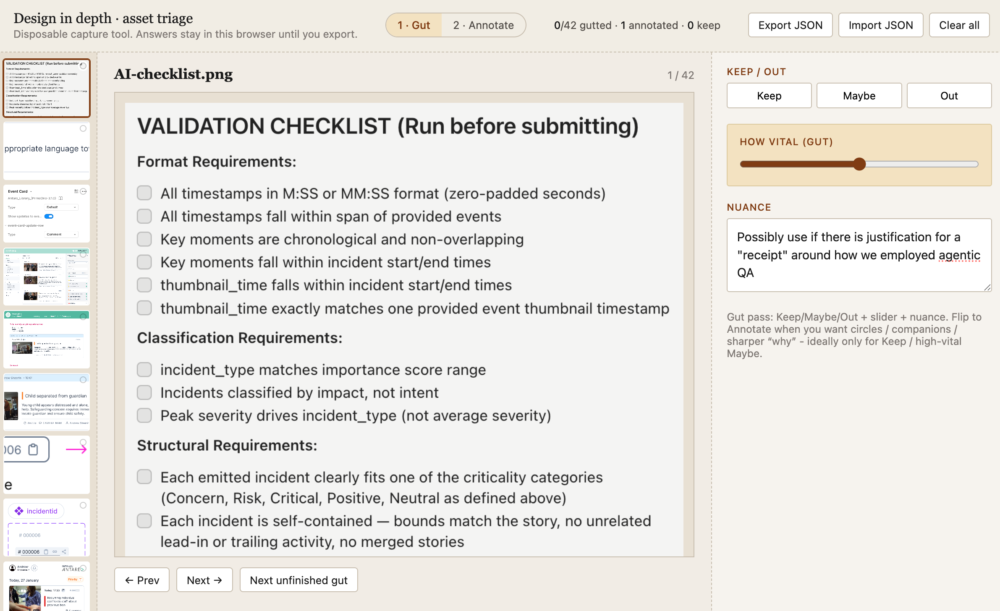

The products I've designed are all different. The way I approach them isn't.
I've always been fascinated by how people think, behave, learn, decide, collaborate and play - and what this means for the systems that govern them (and vice versa).
That's one of the reasons I've never encountered a boring product. Whether it's workplace software, AI systems or board games, every product is ultimately a reflection of how people understand the world, work together and make decisions. The interface is simply where those forces become visible.
1Practice 01
Sitting in ambiguity
Understanding the system before designing the interface.
I love interface design but I rarely start there.
Especially in complexity, I start with assumptions, behaviour and hidden systems - because that's usually where the interesting and persistent problems live.
2Practice 02
Building shared understanding
Designing conditions for understanding between teams to emerge.
People often think of design as the interface. But that's far downstream of what I think is one of design's most valuable outputs: shared understanding.
Good products don't emerge because one person has the best idea. They emerge when a group of people finally see the same problem in the same way.
That's why I spend so much time facilitating workshops, creating frameworks, sketching models and building playful exercises. They're not activities that happen around design - they're often the design work itself.
Over the years I've designed and developed a library of play-based workshop activities that I've used across strategy, product discovery and innovation work.
Play-based workshop activities used across strategy, product discovery and innovation work.
I use games not because they're fun but because the framing of play is psychologically powerful and neurologically useful. When we play…
◇ Certainty is temporarily suspended
○ Fear of failure rescinds
△ People become more curious
□ Hierarchy softens
✦ Ideas become easier to challenge
◎ Understanding emerges faster
∞ Learning is retained longer
It's a critically overlooked tool.
Eventually I found I was being asked to create workshop material faster than I could explain why they worked - so I built a simple framework for others to design them too.
Meaningful Play - the basic canvas I teach (and use myself) whenever I need exercises with genuine learning outcomes, not just engagement.
3Practice 03
Naming hidden things
Giving language to overlooked things so they can be discussed.
Being a language graduate and deeply interested in linguistics and semiotics, I give words careful consideration.
And so one of the most powerful design tools I've discovered isn't visual. It's linguistic.
Giving something a name doesn't simply make it easier to reference. It creates a shared mental model that people can interrogate, build on and ultimately use to make better decisions. Some examples of this practice can be viewed as critical moments in my case studies.
In discovery cases, a name is required to literally bring something novel to life. But I've found that even when something is fully known, teams can recognise a phenomenon long before they have a shared way of talking about it.
This isn't branding. Or a fondness for memorable phrases.
Language changes what groups are able to think about together.
Once something has a name, it stops being a vague feeling and becomes an object that can be questioned, challenged and improved.
4Practice 04
Partnering intentionally with AI
Using AI to accelerate exploration while protecting human judgement.
AI doesn't replace my thinking. It multiplies the number of conversations I can have with my design.
Rather than treating AI as an answer engine, I increasingly use it as a thinking partner.
Sometimes it's a researcher. Sometimes a critic. Sometimes a prototyper. Sometimes an engineer. Sometimes I'll make it argue with me until I understand my own thinking more clearly.
That shift has changed my design process far more than any particular model or tool.
Thinking with AI
My favourite tool I built that I keep coming back to is my virtual design crit room, "populated" with my design heroes from differing disciplines (and principles).
I give them a problem or a mockup or a hypothesis and then watch them unpack it. It explicitly upends the question-answer relationship of most AIs and I had to carefully craft the instructions to avoid normal instincts to round off or conclude investigation.
The custom GPT configuration - four design heroes, one design problem.



A custom GPT where I can watch my design heroes argue over my design decisions.
I rarely ask AI for the answer. I ask it to produce multiple incompatible ways of thinking about the same problem.
I call these techniques "self-disruptive flows" and I find they're essential for maintaining a critical and engaged relationship with AI.
Building with AI
Cursor has also fundamentally changed where my design process ends. Instead of stopping at mock-ups, I increasingly build working products - and while that's fun in and of itself, I do that because interactive software is a much better thinking medium than static pictures.
This can be evidenced in the creation of this portfolio:
Before

After

The homepage chaos-to-clarity concept took a long time to get right; Cursor's first pass gave me the scaffolding and information I needed to direct and finetune my thinking.
Before

After

Each illustration was treated as a story that could be told in different ways before fine-tuning the best story into the finished artefact.
Designing the design
Occasionally the design problem isn't the product; it's the absence of a good thinking tool. In those moments I'll happily spend an hour building a disposable tool if it lets me understand the problem more deeply.
On the homepage, I eventually needed motion-tracking debug and manual keyframe editing to ensure a smooth transition in the headline.

A UI tool to expose motion keyframes in a way that both human and machine could read - after too many "a bit to the left" prompts.

A disposable triage UI to gut-rate case study images and export JSON with rationale - because narrowing assets couldn't be done without changing the case study structure.
Closing thoughts
AI, productive friction and epistemology
The biggest shift recently for me has been philosophical rather than technical.
As execution becomes cheaper, judgement becomes more valuable. We hear that a lot.
Ironically, the judgement that is becoming increasingly valuable is earned through the very frictions that AI is becoming increasingly good at removing.
That's why I think part of becoming an "AI-native designer" is recognising when to accelerate and when to slow down. Because some frictions are great candidates for automating around while others are secretively generative in other areas.


.png)
.png)
.png)